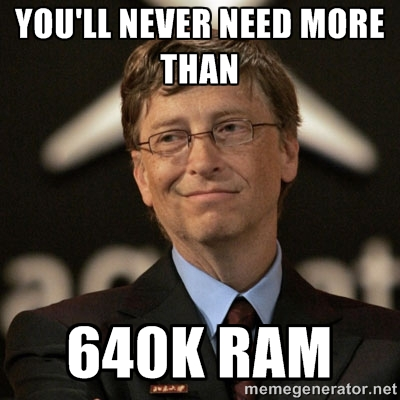

Introduction intoData Science
There are 2 types of people in the world: those who can extrapolate from incomplete data.
We live in Information Age

Information Age - Forecast

Look how many people holds their phones (sign of time).

But not only that!
President Barack Obama implemented executive order
Making Open and Machine Readable the New Default for Government Information.
But, many different governments adopt similar open data policies around the world, enabling changes and innovations on unthought before scale.

- finding Napa earthquake epicenters (by monitoring where people where waking up at given time) and
- daylight saving time effect on our health and productivity (need to mash with other data).
Information Age - Observations
- 50% of data has IP address (is connected to each other)!
- By 2020, almost all data will be connected.
- The abundance and ubiquitousness of data changes business intelligence models (e.g. think Encyclopedia Britannica rendered obsolete by Wikipedia).
- We literally have a whole world in our pocket.
- We no longer choose to be connected, but not to be.
- Some companies accumulated lots of data over years, in a sense they sit on a pile of gold.
- Data is our most valuable natural resource.
- But, we need to be able to connect the dots.
How much data?
| processes 20 PB a day (2008) crawls 20 B web pages a day (2012) |
|
| > 100 PB of user data + 500 TB/day (2012) |
|
| Amazon Web Services | S3: 449 B objects peak 290k requests/second (2011) 1T objects(2012) |
| JPMorgan Chase | 150 PB on 50k+ servers running 15k apps (2011) |
| CERN | Produces 15 PB a year |
World changed a lot, very quickly (1981 -> 2016)
What was unthinkable even for visionaries 30 years ago, today seems obvious for everyone.
Information age revolution takes place right now and data scientist are at the edge of it...
... and this is why it is the sexiest job on the market.
But, who exactly is a data scientist?
Who is a data scientist?
Software Engineer
Statistician
Business Analyst
Data Scientist
Who is a data scientist?
- Business Analyst - to understand the data and problem, prioritize, what is a measure of success, etc.
- Statistician - to be able to model the data, confidence level, back test it, etc.
- Software Engineering - to be able to implement advanced algorithms, perform complex computations, and create a data product.
As the word is "sexy" there are people who like to borrow the term, e.g. a person just running lots of Map/Reduce Hadoop jobs is not (necessarily) a data scientist.
Data scientists come in different flavours:
- Data businessperson
- Data creative
- Data developer
- Data researcher
- Data integration
- Data exploration
- Solution development (e.g. modelling)
- Knowledge management
- DS product ownership
One to rule them all.Python as a glue
 http://www.shivonzilis.com/machineintelligence
http://www.shivonzilis.com/machineintelligence